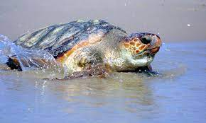

Turtles of Sri Lanka
Olive Ridley Turtle
The Olive Ridley turtle (Lepidochelys olivacea) is one of the smallest and most abundant sea turtle species in the world. It is named for its olive-colored carapace, which is heart-shaped and relatively smooth compared to other turtle species.

Leatherback Turtles
Leatherback turtles (Dermochelys coriacea) are a critically endangered species and represent an important presence in Sri Lanka. Nesting Sites: Sri Lanka hosts significant nesting sites for Leatherback turtles. Beaches such as Rekawa and Pigeon Island National Park are known for their nesting activities. Unique Nesting Behavior: Leatherback turtles have distinctive nesting behavior compared to other sea turtles. They have the ability to nest during both day and night, which makes them vulnerable to human disturbances and artificial lighting along the coast. Conservation efforts focus on minimizing human impacts during nesting and ensuring safe nesting conditions. Public Awareness and Education: Leatherback turtles play a vital role in raising public awareness about the importance of marine conservation.

Loggerhead Turtles
Loggerhead sea turtles (Caretta caretta) are a species of sea turtles that can occasionally be found in Sri Lanka's waters. However, their presence in Sri Lanka is relatively rare compared to other sea turtle species. Nesting Behavior: Loggerhead turtles are known to exhibit a preference for nesting in warmer regions, primarily in the Mediterranean and Atlantic regions. International Significance: While Loggerhead sea turtles may not have a significant presence in Sri Lanka, they are of international conservation significance.
Green Turtles
Green turtles (Chelonia mydas) are another important species of sea turtles in Sri Lanka. Nesting Sites: Sri Lanka is home to several important nesting sites for Green turtles. onservation Status: Green turtles are listed as endangered by the IUCN. Protecting their nesting sites and implementing conservation measures is vital to their long-term survival. Research and Monitoring: Green turtles in Sri Lanka are the subject of research and monitoring programs. These efforts help gather valuable data on population dynamics, nesting behavior, and migration patterns, which contribute to conservation strategies and management plans.

Hawksbill Turtles
The hawksbill turtle (Eretmochelys imbricata) is an important and endangered species that can be found in the waters of Sri Lanka. Nesting Sites: Sri Lanka has several nesting sites where hawksbill turtles come ashore to lay their eggs. Tourism and Education: Hawksbill turtles attract tourists and serve as an educational resource, allowing visitors to learn about these unique creatures and the need to protect their habitats.
Turtles of Sri Lanka
| Turtle | Description | Conservation Status |
|---|---|---|
| Olive Ridley Turtle | The Olive Ridley turtle is a significant species in Sri Lanka. It nests in large numbers along the coast. | Least Concern |
| Green Turtle | The Green turtle is known for its herbivorous diet and nesting activities in Sri Lanka's beaches. | Endangered |
| Leatherback Turtle | The Leatherback turtle is a critically endangered species with occasional sightings in Sri Lanka. | Critically Endangered |
| Hawksbill Turtle | The Hawksbill turtle is known for its unique shell and its role in maintaining coral reef ecosystems. | Critically Endangered |
| Loggerhead Turtle | The Loggerhead turtle occasionally visits Sri Lanka's waters but is not as commonly found as other species. | Endangered |
| Information accurate as of 2021. | ||
About us
We invite you to join us on this incredible adventure.
Together, let's embark on a journey of discovery, exploration, and pure joy.
Welcome to our world. Welcome to a new chapter of unforgettable experiences.
Welcome to the extraordinary.